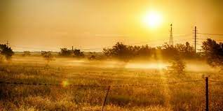
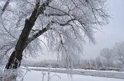
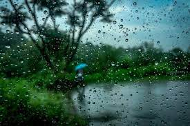
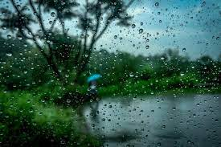

TYPES OF SEASON


 

SUMMER(img.1):-
Out of six seasons, summer rules the hottest part. Summer season in India starts in the month of March (end) and lasts until the end of May>. In this period, the rays of the sun fall perpendicularly over the lands.
In late nights and early mornings,there would be a fall in temperature making a pleasant environment and during middays,
there would be high temperature due to the intense heat outside.
WINTER(img.2):-
Winter is the most frigid season of all time. It is one of the six seasons that come to pass in India. This season typically
begins from December and lasts till February>. During winter season in India,days are smaller and the nights become more lasting. In the course of this period, the temperature, humidity, and rainfall are low.
SPRING(img.3):-
Spring refers to the season between winter and summer. With the advent of February, the bleak winter season in India emerges
into the pleasant spring. Spring season in India differs from country to country. In India, spring is usually from February to April. In most western countries, spring season in India begins from March to May as it depends on their weather conditions and temperatures.
MONSOON(img.4):-
The monsoon season in India usually starts from June and lasts till Mid-September. It is also named as the “South West Monsoon”
season. When Monsoon season in India arrives after the tyrannical heat of the summer season in India, then greenery spreads
all over. Cold winds run everywhere, crops flit in the fields, the faces of farmers begin to glow.